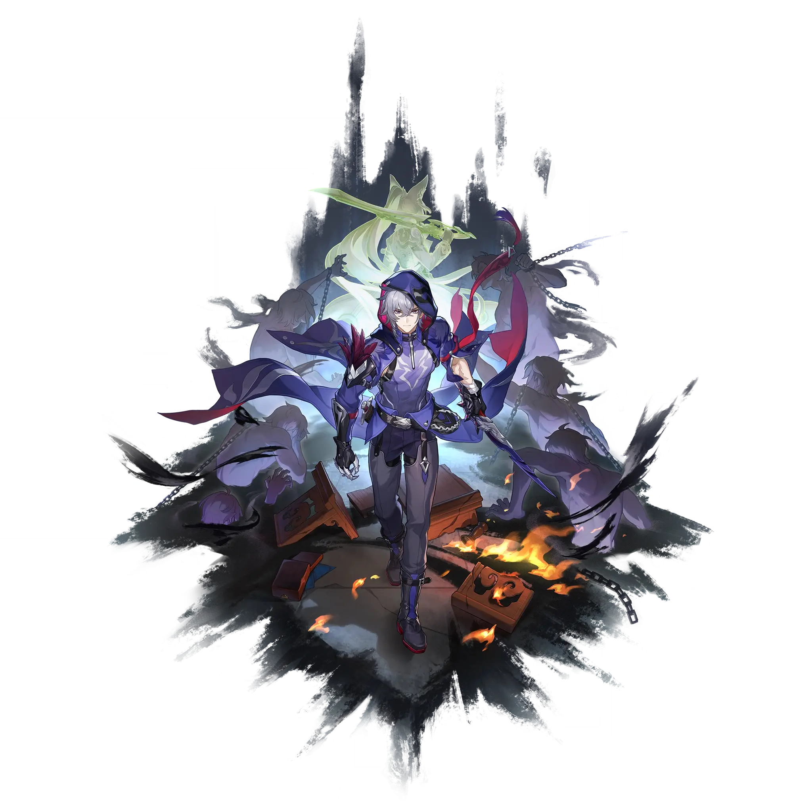

Moze
Best Moze build guide for Honkai Star Rail. See Moze's best Relics, Light Cones, teams, Eidolons, Trace priority, and how to play Moze.
🔍 Detail Skill
Semua skill aktif dan pasif beserta efeknya.
Deals Lightning DMG equal to #1[i]% of Moze's ATK to a single target enemy.
Marks a designated single enemy target as "Prey" and deals to it Lightning DMG equal to #1[i]% of Moze's ATK, and gains 9 points of Charge. When there are no other characters on the field that are capable of combat, Moze cannot use his Skill and dispels the enemy's "Prey" state.
When "Prey" exists on the field, Moze will enter the Departed state. After allies attack "Prey," Moze will additionally deal 1 instance of Lightning Additional DMG equal to #1[i]% of his ATK and consumes 1 point of Charge. For every 3 point(s) of Charge consumed, Moze launches 1 follow-up attack to "Prey," dealing Lightning DMG equal to #2[i]% of his ATK. When Charge reaches 0, dispels the target'
After using Technique, enters the Stealth state for 20 second(s). While in Stealth, Moze is undetectable by enemies. If Moze attacks enemies to enter combat while in Stealth, increases DMG by 30%, lasting for 2 turn(s).
⚔ Light Cone Terbaik
Diurutkan dari yang paling kuat. Persentase menunjukkan performa relatif terhadap pilihan terbaik.
💎 Relic Set Terbaik
Set terbaik untuk karakter ini, diurutkan berdasarkan prioritas.
📊 Stat Utama
Stat yang dicari pada tiap slot.
👥 Tim yang Direkomendasikan
Karakter yang sering dipasangkan bersama Moze.
 Feixiao
Feixiao
 Dr. Ratio
Dr. Ratio
 Aventurine Waveflair
Aventurine Waveflair
🔗 Lanjutkan
Build ini dirangkum dari Prydwen Institute. Starwise tidak menghitung sendiri. Angka bisa berubah setelah patch atau karakter baru rilis.